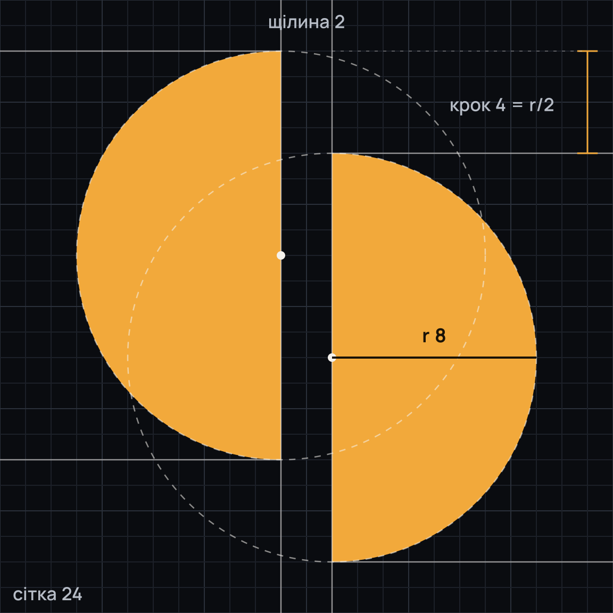

- сітка 24Один шлях, лише цілі числа — вставляється в кожне гніздо старої «P».
- r = 8Дві половини одного кола. Радіус не змінюється ніколи, навіть у русі.
- щілина 2Темрява між постами. У локапі дорівнює товщині ноги N.
- крок 4= r/2. Світло передано далі — вниз праворуч, уздовж діагоналі N.
- 16–20 pxМікрокрій на сітці 16: щілина 2 px і крок 3 px на цілих пікселях.
M11 2A8 8 0 0 0 11 18ZM13 6A8 8 0 0 1 13 22ZБез отворів: заливка nonzero і evenodd дає той самий знак у вебі, VectorDrawable і Compose.